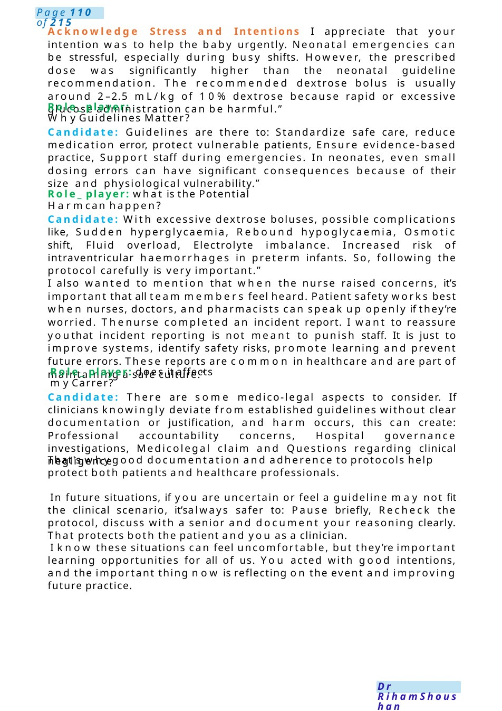

Colleague Drinking Alcohol
MRCPCHCommunication Scenario Medical Colleague Not Following Guidelines – Neonatal Hypoglycaemia Scenario Stem: You are the pediatric registrar in the neonatal unit. Apreterm baby developed neonatal hypoglycaemia. Ajunior doctor prescribed IV dextrose bolus 10 mL/kg instead of the recommended 2.5 mL/kg according to the neonatal guideline. The nurse informed him this was not according to protocol, but he insisted on his prescription. The nurse completed an incident report.
Scenario Summary
MRCPCHCommunication Scenario Medical Colleague Not Following Guidelines – Neonatal Hypoglycaemia Scenario Stem: You are the pediatric registrar in the neonatal unit. Apreterm baby developed neonatal hypoglycaemia. Ajunior doctor prescribed IV dextrose bolus 10 mL/kg instead of the recommended 2.5 mL/kg according to the neonatal guideline. The nurse informed him this was not according to protocol, but he insisted on his prescription. The nurse completed an incident report.
Full Original Scenario

Colleague Drinking Alcohol
MRCPCHCommunication Scenario Medical Colleague Not Following Guidelines – Neonatal Hypoglycaemia
Scenario Stem: You are the pediatric registrar in the neonatal unit. Apreterm baby developed neonatal hypoglycaemia. Ajunior doctor prescribed IV dextrose bolus 10 mL/kg instead of the recommended 2.5 mL/kg according to the neonatal guideline. The nurse informed him this was not according to protocol, but he insisted on his prescription. The nurse completed an incident report.
Yourtask is to speak with the junior colleague: Discuss the appropriate management of neonatal hypoglycaemia. why following guidelines is important. Discuss patient safety and medico-legal implications.
Role Player (Junior Doctor): You are FY2 / junior pediatric trainee. You were covering a busy neonatal shift. You prescribed dextrose 10 mL/kg IV bolus because you believed the baby was severely hypoglycemic and needed rapid correction. You felt pressured and thought acting quickly was safer. When the nurse challenged you, you felt undermined and insisted on your decision. You nowfeel anxious because an incident report was filed.
Questions You May Ask: Was the baby harmed? AmI going to be reported officially? Whyis the guideline dose so strict? What could actually happen from giving too much dextrose? Whydid the nurse file an incident report?
Hi Dr Ahmed,thanks for taking the time to speak with me. I wanted us to discuss the recent neonatal hypoglycaemia case. This is not about blaming anyone —the aim is to review what happened, ensure patient safety, and support learning for future practice.
Explore His Perspective: Can you talk me through what happened from your perspective? I understand it was a stressful situation, and you were trying to correct the hypoglycaemia quickly.
Role-player: I was so much stressful doctor, this is not the first time to manage hypoglycaemia in this wayand i have good feedback about mypatients.

Acknowledge Stress and Intentions I appreciate that your intention was to help the baby urgently. Neonatal emergencies can be stressful, especially during busy shifts. However, the prescribed dose was significantly higher than the neonatal guideline recommendation. The recommended dextrose bolus is usually around 2–2.5 mL/kg of 10% dextrose because rapid or excessive glucose administration can be harmful.”
Role_ player: Why Guidelines Matter?
Candidate: Guidelines are there to: Standardize safe care, reduce medication error, protect vulnerable patients, Ensure evidence-based practice, Support staff during emergencies. In neonates, even small dosing errors can have significant consequences because of their size and physiological vulnerability.”
Role_ player: what is the Potential Harmcan happen?
Candidate: With excessive dextrose boluses, possible complications like, Sudden hyperglycaemia, Rebound hypoglycaemia, Osmotic shift, Fluid overload, Electrolyte imbalance. Increased risk of intraventricular haemorrhages in preterm infants. So, following the protocol carefully is very important.”
I also wanted to mention that when the nurse raised concerns, it’s important that all team members feel heard. Patient safety works best when nurses, doctors, and pharmacists can speak up openly if they’re worried. Thenurse completed an incident report. I want to reassure youthat incident reporting is not meant to punish staff. It is just to improve systems, identify safety risks, promote learning and prevent future errors. These reports are common in healthcare and are part of maintaining a safe culture.”
Role_ player: does it affects my Carrer?
Candidate: There are some medico-legal aspects to consider. If clinicians knowingly deviate from established guidelines without clear documentation or justification, and harm occurs, this can create: Professional accountability concerns, Hospital governance investigations, Medicolegal claim and Questions regarding clinical negligence
That's whygood documentation and adherence to protocols help protect both patients and healthcare professionals.
In future situations, if you are uncertain or feel a guideline may not fit the clinical scenario, it’salways safer to: Pause briefly, Recheck the protocol, discuss with a senior and document your reasoning clearly. That protects both the patient and you as a clinician.
I know these situations can feel uncomfortable, but they’re important learning opportunities for all of us. You acted with good intentions, and the important thing now is reflecting on the event and improving future practice.

Needle Prick Injury
Communication Scenario: Taking Consent for Blood Test from a Child After a Needle-Stick Injury
Scenario:
Youare a paediatric doctor speaking with the mother of a 4-year-old child whorecently arrived from Ghana. During care, the child accidentally caused a needle-stick injury to a nurse. According to hospital policy, you need to request consent from the parent to perform blood tests on the child to check for infections that can rarely be transmitted through blood. The mother may feel worried or confused, so you must explain clearly and reassure her.
Introduction and Building Rapport
Doctor:
“Hello, I’mthe paediatric doctor looking after your child today. I understand that during the procedure there was an accidental needle injury to one of our nurses. First, I want to reassure you that your child is safe, and this kind of accident can occasionally happen in hospitals.”
- Explain the Purpose of the Discussion
“I would like to talk with you about performing a small blood test for your child. This test helps us check for certain infections that can sometimes be transmitted through blood when a needle-stick injury occurs.”
- Explain Whythe Test is Important
“Whena healthcare worker experiences a needle injury, hospital guidelines recommend testing both the healthcare worker and the source patient. This helps us:
- Protect the healthcare worker
- Ensure early detection and treatment if any infection is present
- Reassure everyone if the tests are negative